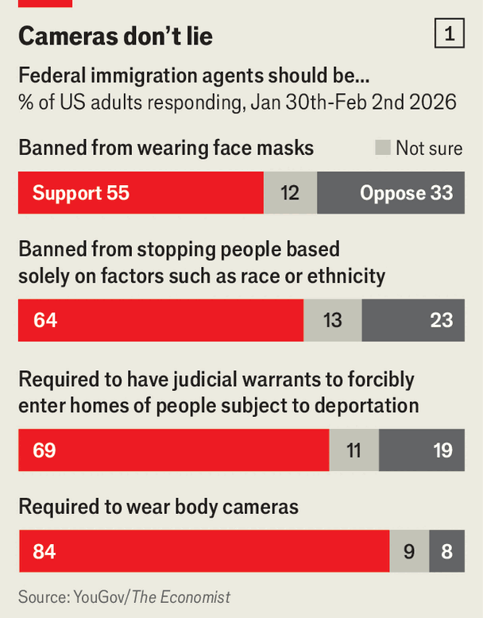
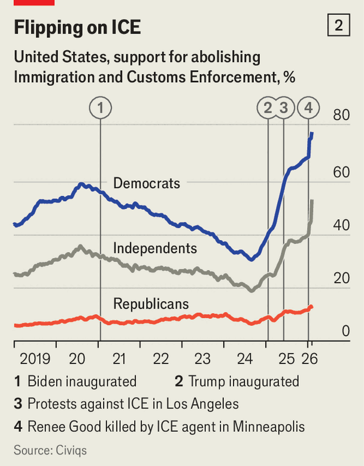

United States | Restrain or abolish?
How Democrats aim to curb ICE without losing votes
Its brutal tactics are unpopular with Americans. But so is border insecurity
February 12th 2026

ON FEBRUARY 10th Republicans and Democrats had a civil conversation about immigration enforcement. Just kidding. At congressional hearings into the recent deadly actions of federal agents in Minnesota, Rodney Scott, the head of Customs and Border Protection (CBP), referred to protesters as “paid agitators”. LaMonica McIver, a Democrat from New Jersey (who is being prosecuted for allegedly impeding federal officers outside a detention facility), asked Todd Lyons, the acting head of Immigration and Customs Enforcement (ICE), if he thinks he is going to hell.
Republicans largely defended ICE agents, and accused Democrats of making their jobs more dangerous by stoking hysteria against them. Eli Crane, a Republican from Arizona, accused them of wanting to let in more illicit migrants so they could illegally vote in American elections. (However, one or two Republican lawmakers hinted that the agencies could perhaps be a little less gung-ho in their use of force.)
Democrats are holding up a bill to fund the Department of Homeland Security (DHS), demanding that it include oversight reforms. Without a deal, DHS funding is due to expire on February 13th, causing a partial government shutdown. This may not be the most effective way to rein in President Donald Trump’s deportation campaign. A shutdown would squeeze some parts of DHS, but ICE and CBP are flush with cash thanks to last year’s One Big Beautiful Bill. Democrats face a quandary. They want to curb ICE’s excesses, which appal voters. But they don’t want to sound soft on border security.
Even after federal agents were filmed killing a mother and a nurse in Minnesota, Americans still trust Republicans more than Democrats on immigration. Much of that distrust stems from Joe Biden’s presidency. Upon taking office in 2021, Mr Biden reversed many of the immigration policies of Mr Trump’s first term, including one that required asylum-seekers to wait in Mexico for their cases to be adjudicated. He also paused all deportations. “The smuggling networks in Central and South America really seized on that to sell migrants on the fact that it was the time to go,” admits Blas Nuñez-Neto, a former DHS official. Encounters at the border exploded in 2022 and 2023.

In 2024 Mr Biden tightened border controls again, but by then a presidential election campaign was raging. Mr Trump, and seemingly every other Republican, ran on border chaos. Kamala Harris, who as vice-president had been given the nebulous task of tackling the “root causes” of migration from Central America, lost.
The safeguards congressional Democrats now want to add to the DHS funding bill are popular. They include barring immigration agents from wearing masks; stopping racial profiling; requiring judicial warrants to enter private property; and mandating that agents wear body cameras. Each of these ideas enjoys the support of most Americans, finds a YouGov/The Economist poll (see chart 1). They also fit with a message, articulated by moderates such as Senator Ruben Gallego of Arizona, that the aim is to “reform and restrain ICE”.
But not all Democrats weigh their words. During this week’s hearing Shri Thanedar, a Democratic congressman from Michigan, said “ICE must be abolished.” He has introduced a bill to do just that. “Abolish ICE” was a rallying cry for progressives during Mr Trump’s first term. It is now so popular among the Democratic rank and file (see chart 2) that some think the party will embrace it again. However, “Slogans like ‘Defund the police’ or ‘Abolish ICE’ don’t resonate with the voters we need to win elections in purple and red districts,” says Mr Nuñez-Neto. “I think this is a…trap that is being set by the president and his advisers for Democrats.” Each party insists that the other is extreme.

Sarah Pierce of Third Way, a centrist think-tank, warns that the seemingly high levels of support for abolition could be misleading. Data for Progress, a pollster, found that only a third of Democrats think abolishing ICE means completely dissolving immigration enforcement. Similar proportions thought abolition meant that ICE’s duties would be reallocated, or that it would be replaced by a new agency. Voters “definitely still want immigration enforcement”, says Ms Pierce. “They just don’t want what we’re seeing right now.”
If Democrats fail to restrain ICE via the appropriations process, they may have other chances. Should the party win back control of the House at the midterm elections, Democratic committee chairs will have the power to subpoena administration officials. At the very least, that could make for some spicy hearings. Yet even a robust oversight operation would have trouble keeping tabs on a vast deportation campaign that evolves every day.
On February 6th a three-judge panel of the Fifth Circuit Court of Appeals broke with decades of precedent when it blessed the administration’s mandatory detention policy. Last summer ICE changed its interpretation of American immigration law to classify any migrant who had entered the country illegally—even if they arrived years ago and are law-abiding—as someone who is “seeking admission”, and therefore subject to mandatory detention without bond. The case may eventually be heard by the Fifth Circuit’s full bench or the Supreme Court. “For purposes of immigration detention,” wrote the dissenting judge, “the border is now everywhere.”
Meanwhile, the administration is spending millions to lease warehouses where all of those migrants will be kept. At the detention centres ICE already oversees, the rules are constantly changing. Members of Congress are entitled to make unscheduled visits to detention facilities as part of their oversight duties. In practice, however, many have been prevented from doing so. On February 6th Veronica Escobar, a Democratic congresswoman, set out to visit ICE’s biggest facility: East Camp Montana, a tent camp at an army base in Texas. She was allowed inside, but was prevented from speaking with detainees. “When you talk to the personnel on site they will tell you, ‘Everything is fine. Everything is great!’” she says. “That has never been the case once I’ve actually sat down with detainees.” She laughs when asked whether DHS ever answers her requests for information about the camp. “It is generally a black hole.” ■
Stay on top of American politics with The US in brief, our daily newsletter with fast analysis of the most important political news, and Checks and Balance, a weekly note that examines the state of American democracy and the issues that matter to voters.